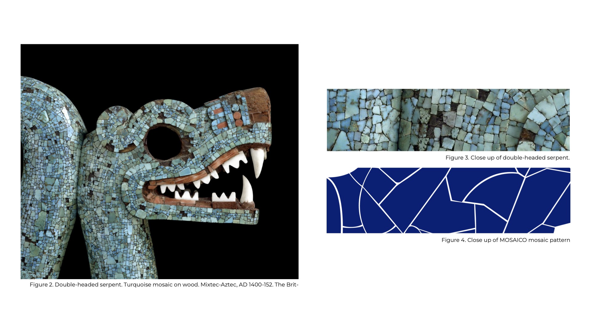
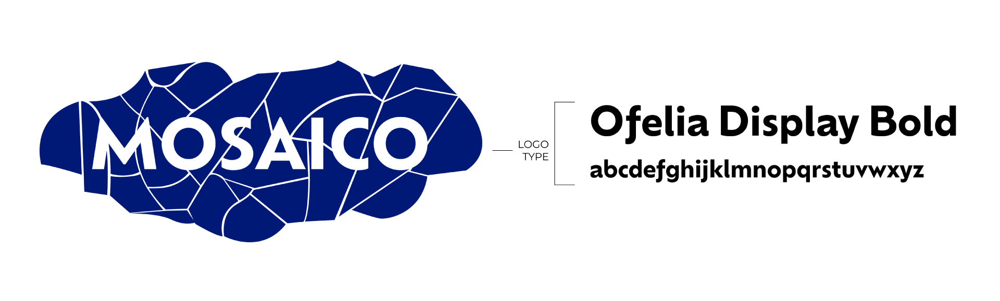
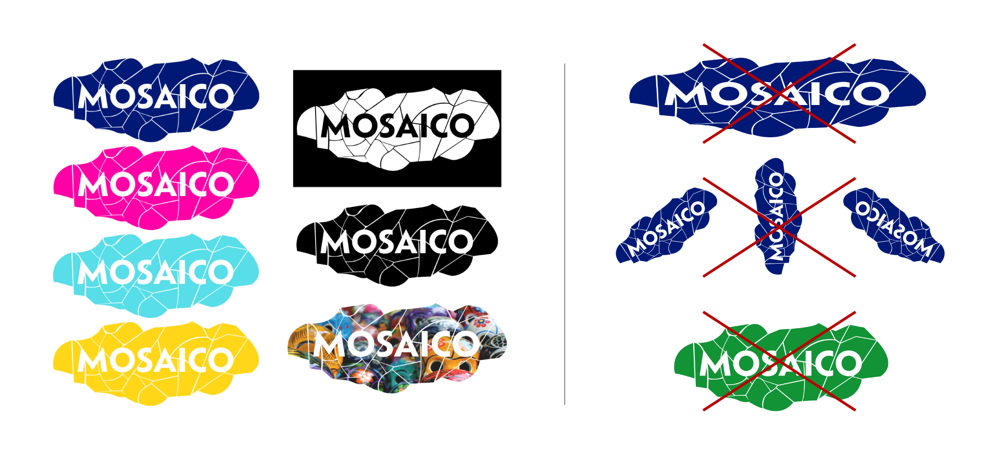
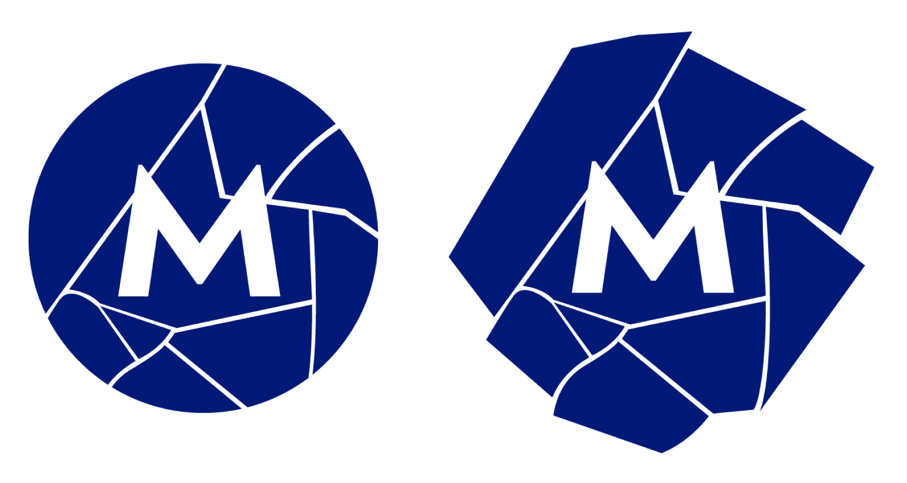
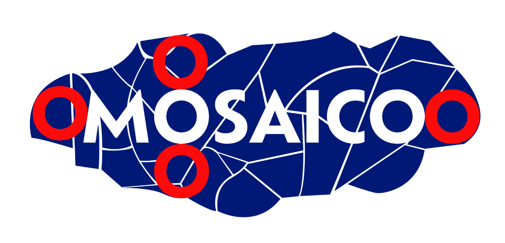
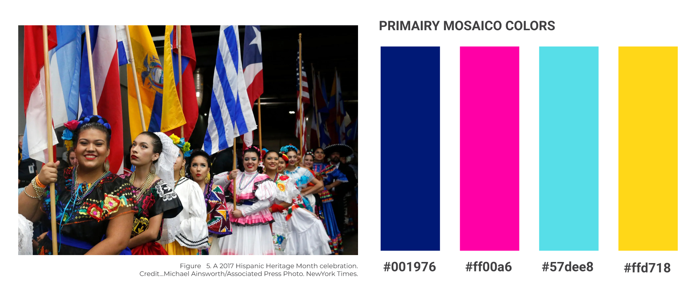
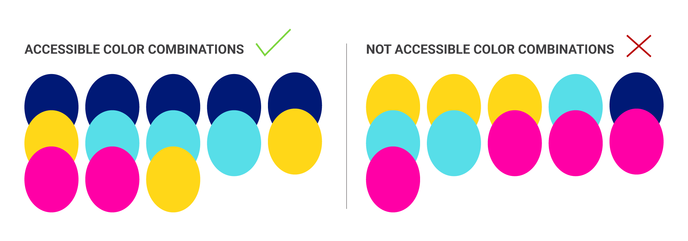

WHAT IS MOSAICO?
As an emerging Latina graphic designer, I’ve noticed that narratives about Latine designers are often difficult to find in a single location. To address this gap, I created a wiki forum (a space where users can both contribute to and discuss the same content) named MOSAICO that collects and preserves the stories of Latine designers, making it easier for others like me to discover graphic designers from similar backgrounds. This style guide was created to ensure consistency in written and visual communication by provid- ing a set of rules and guidelines for formatting, language, and branding. This consistency will help maintain a cohesive brand identity.
WHY LATINE?
You may have noticed that I mostly use Latine. For this project, I believe that Latine encompasses various identities and promotes an inclusive environment within our community. While no single term can cap- ture everyone's identity, and recognize that the discus- sion about terminology is complex and changing. Each person has the right to choose the term that resonates with them. As we learn, MOSAICO aims to grow and foster a welcoming community.
The brand imagery of MOSAICO draws inspiration from mosaic art found in Latin America. This connection to Latin American art reflects my desire to learn more about my Mexican heritage and other Latin American cultures, with the goal of decolonizing the art and design canon.

The MOSAICO brand captures a bold yet minimalist approach. The MOSAICO title is a geometric sans serif named Ofelia Display type. Ofelia was created by Brazilian Designer Daniel Sabino under the text foundry Blackletra. It is a contemporary, straightforward type that is complemented by a vibrant yet simple mosaic pattern.

The primary logo serves as a hero image for online platforms and merchandise. It can be formatted in black, white, brand colors, or a clipping masked image related to the content on the MOSAICO webpage. Do NOT don’t stretch, use unaffiliated brand colors, and/or rotate logo.

A secondary logo emphaizes the “M” in MOSAICO, and follows the same formatting rules as the primary logo.

The MOSAICO logo must have proper spacing by using the “O” in MOSAICO, which should align with the first and last letters of the title, and the first letter O.

COLOR
The color palette draws inspiration from the diverse traditions and cultures of Latin America. Below is a picture of various traditional dresses from different Latin American countries, showcasing how these vibrant colors are actively used.

ACCESSIBILITY
The following colors must be paired accordingly to ensure sufficient contrast for legibility and accessibility across the website.

TYPOGRAPHY
I specifically picked type that came from Foundries that aligned with Latine origins and designers.

Brother 1816 is from TipoType Foundry created by Uruguayan designers Fernando Díaz and Ignacio Corbo.

Petala Pro is from Typefolio, a independent Brazilian typefoundry, established by the designer Marconi Lima.
Basic Sans is created by Daniel Hernández and from Latinotype is a Chilean independent type foundry established in 2008. Latinotype specializes in the design of high quality typefaces, which are an expression of their Latin American identity.